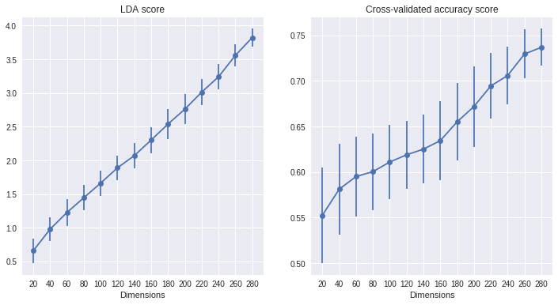
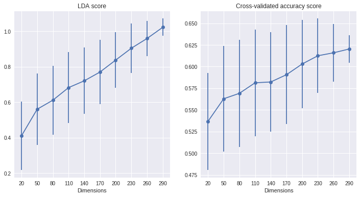

LDA score and decoding accuracy across different dimensionalities
Posted on 10 July 2017 in Some other stuff
Introduction
When analyzing neural data we are often interested in establishing contrasts between experimental conditions (i.e. seeing whether neural responses differentiate between stimulus A and stimulus B). A possible way to quantify this at the population level is by computing the LDA score (projecting the data to the one-dimensional space which achieves the highest separation between classes and then taking the difference between the centroids of the two classes). Moreover, we might want to determine whether information on a certain experimental parameter is encoded in the activity of the neurons (i.e. can be decoded from it). These two things are not unrelated, because if neural responses differentiate between conditions, then we have good reasons to suspect that a decoder will be able to learn this discrimination rule and correctly decode the variable of interest.
Sometimes, it might be natural to want to use these measures to make comparisons between different recordings (in brain areas, or different animals). A problem might arise if the number of recorded neurons is different across areas/animals. Then, the difference that you see in LDA score or decoding performance might be confounded by the different dimensionality of the two datasets, and not truly reflective of information encoded in the neural response.
import numpy as np
import pandas as pd
import matplotlib.pyplot as plt
import seaborn as sns
import sklearn.datasets
from sklearn.ensemble import RandomForestClassifier
from sklearn.linear_model import LogisticRegression
from sklearn.model_selection import cross_val_score
from p_utils import lda_score
import warnings
warnings.filterwarnings("ignore", category=UserWarning)
Recording differently-sized subsets of a larger population
To test the effect of dimensionality, we suppose that we are interested in a population of neurons, and that only a certain fraction of neurons in this population is actually responsive to the experimental parameter of interest (i.e. differentiates between two conditions of interest). During an experiment, we generally only have access to the activity of a small subset of all the neurons in the population. Here, we want to investigate what happens to the LDA score and decoding accuracy if we experimentally record subsamples of different sizes from the same population.
In the code below, an artificial dataset is generated in which only part of the features (i.e. neurons) are informative, while the rest is uninformative noise. We then repeatedly draw samples of increasing size from this population, corresponding to the neurons that we have actually recorded, and compute LDA score and decoding performance on these data.
n_dim = range(20, 300, 20)
n_iter = 100
rs = pd.DataFrame(columns=['n_dim', 'lda_score', 'dec_acc'])
X, y = sklearn.datasets.make_classification(n_samples=500,
n_classes=2,
n_features=300,
n_informative=50,
n_redundant=0,
n_repeated=0,
shuffle=False,
random_state=None)
for n in n_dim:
for i in range(n_iter):
sample = np.random.choice(range(X.shape[1]), replace=False, size=n)
X_sample = X[:, sample]
clf = LogisticRegression()
cvscore = cross_val_score(clf, X_sample, y, cv=3)
lda = lda_score(X_sample, y)
rs.loc[rs.shape[0] + 1] = [n, lda, cvscore.mean()]
# average the results and plot
lda = rs.groupby('n_dim').mean().lda_score
std_lda = rs.groupby('n_dim').std().lda_score
acc = rs.groupby('n_dim').mean().dec_acc
std_acc = rs.groupby('n_dim').std().dec_acc
f, ax = plt.subplots(1, 2, figsize=[12, 6])
ax[0].errorbar(n_dim, lda, yerr=std_lda, fmt='-o')
ax[1].errorbar(n_dim, acc, yerr=std_acc, fmt='-o')
ax[0].set_xlabel('Dimensions')
ax[1].set_xlabel('Dimensions')
ax[0].set_title('LDA score')
ax[1].set_title('Cross-validated accuracy score')
for axis in ax:
axis.set_xticks(n_dim)
axis.set_xticklabels(n_dim)
plt.show()

This is relatively unsuprising: if we have recorded more neurons from our population, there's also a higher chance that we have recorded more of the responsive ones, and so our decoder will have access to more information, and the LDA will be able to separate the two classes more effectively.
Using dimensionality reduction to equalize the dimensionality of the datasets
It was recently suggested to me that we might be able to avoid the strong effect of dimensionality that emerges in the previous plots by applying PCA (or a dimensionality reduction method of choice) to the different datasets, in order to reduce them to the same dimensionality before computing the measures. After a quick check that four PCA components capture most of the variance in this dataset (not shown here) I try this potential solution:
n_dim = range(20, 300, 30)
n_iter = 500
rs = pd.DataFrame(columns=['n_dim', 'lda_score', 'dec_acc'])
from sklearn.decomposition import PCA
X, y = sklearn.datasets.make_classification(n_samples=1000,
n_classes=2,
n_features=300,
n_informative=50,
n_redundant=0,
n_repeated=0,
shuffle=False,
random_state=None)
for n in n_dim:
for i in range(n_iter):
sample = np.random.choice(range(X.shape[1]), replace=False, size=n)
X_sample = X[:, sample]
# compute the PCA transform, keeping the first 4 components
pca = PCA(n_components=4)
X_sample = pca.fit_transform(X_sample)
clf = LogisticRegression()
cvscore = cross_val_score(clf, X_sample, y, cv=3)
lda = lda_score(X_sample, y)
rs.loc[rs.shape[0] + 1] = [n, lda, cvscore.mean()]
lda = rs.groupby('n_dim').mean().lda_score
std_lda = rs.groupby('n_dim').std().lda_score
acc = rs.groupby('n_dim').mean().dec_acc
std_acc = rs.groupby('n_dim').std().dec_acc
f, ax = plt.subplots(1, 2, figsize=[12, 6])
ax[0].errorbar(n_dim, lda, yerr=std_lda, fmt='-o')
ax[1].errorbar(n_dim, acc, yerr=std_acc, fmt='-o')
ax[0].set_xlabel('Dimensions')
ax[1].set_xlabel('Dimensions')
ax[0].set_title('LDA score')
ax[1].set_title('Cross-validated accuracy score')
for axis in ax:
axis.set_xticks(n_dim)
axis.set_xticklabels(n_dim)
plt.show()

The effect of dimensionality is reduced, but clearly not eliminated!
Larger populations with the same number of responsive neurons
n_dim = range(20, 300, 30)
n_iter = 500
rs = pd.DataFrame(columns=['n_dim', 'lda_score', 'dec_acc'])
for n in n_dim:
for i in range(n_iter):
clf = LogisticRegression()
X, y = sklearn.datasets.make_classification(n_samples=500,
n_classes=2,
n_features=n,
n_informative=5,
n_redundant=0,
n_repeated=0,
shuffle=False,
random_state=None)
cvscore = cross_val_score(clf, X, y, cv=3)
lda = lda_score(X, y)
rs.loc[rs.shape[0]+1]=[n, lda, cvscore.mean()]
lda = rs.groupby('n_dim').mean().lda_score
std_lda = rs.groupby('n_dim').std().lda_score
acc = rs.groupby('n_dim').mean().dec_acc
std_acc = rs.groupby('n_dim').std().dec_acc
f, ax = plt.subplots(1, 2, figsize=[9, 6])
ax[0].errorbar(n_dim, lda, yerr=std_lda, fmt='-o')
ax[1].errorbar(n_dim, acc, yerr=std_acc, fmt='-o')
ax[0].set_xlabel('Dimensions')
ax[1].set_xlabel('Dimensions')
ax[0].set_title('LDA score')
ax[1].set_title('Cross-validated accuracy score')
for axis in ax:
axis.set_xticks(n_dim)
axis.set_xticklabels(n_dim)
plt.show()
Take-home message
Comparing LDA score or decoding accuracy between recordings with different numbers of neurons may be subject to contamination effects due to the dimensionality of the data, and should thus be handled with care. One should not come to the conclusion that differences in LDA or decoding accuracy of two groups of neurons of different sizes reflect differences in the underlying population, because these differences might be due partially or exclusively to the sampling effects shown here. Applying PCA to equalize the dimensionality reduces but does not eliminate the magnitude of this effect in the datasets analyzed here.